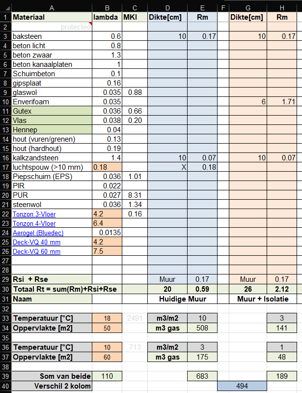
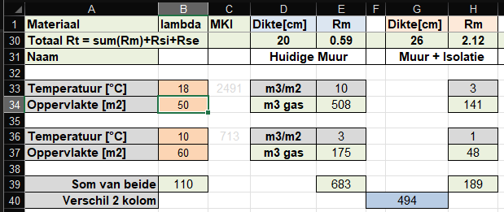

Op dit blad kun je de R-waarde van sandwich constructies eenvoudig berekenen en met elkaar vergelijken.
Op dit moment vind een grote renovatie van deze pagina plaats, omdat we ook de milieu-impact van de verschillende isolatie materialen duidelijk in beeld willen brengen en het belang van biobased isoleren willen benadrukken. De kolom MKI is daarvoor een eerste stap.
Onderstaand voorbeeld laat het effect zien van een lege spouwmuur (blauwe kolommen) en diezelfde spouwmuur voorzien van 6 cm ecoschuim (is gewoon PUR), roze kolommen.
Beginnen we met de oorspronkelijke situatie, daar gebruiken we de linker blauwe kolom voor.
Vul je de dikte van ieder sandwich element in, hier dus
In de rechter blauwe kolom komt nu de bijdrage van die sandwich component tot de Rc-waarde. Bijvoorbeeld baksteen heeft een bijdrage van 0.17 aan de Rt waarde.
Cel D29 is een keuzecel, waarin je aangeeft of het om vloer/muur/dak gaat. Afhankelijk van de keuze komt er nog een klein beetje isolatie bij, als gevolg van de langsstromende lucht (Rsi+Rse).
We zien dat de isolatiewaarde van deze oorspronkelijke muur Rt = 0.59 bedraagt.
Rt = Rtotaal, in de volksmond meestal aangeduid met Rc = Rconstructie
Nu vullen we op dezelfde manier de linker roze kolom in met
We vinden nu Rt =2.12
Voor documentatie, dit soort berekeningen kan ook interessant zijn voor technisch geschoolde bewoners, kun je op regel 31 nog een naam invoeren.
Extra verliezen, bijv als gevolg van spouwankers worden hier weggelaten. Omdat vergelijken het belangrijkste is, spelen die factoren ook geen grote rol van betekenis.
Hierna kun je ook nog eens expliciet naar de gasbesparing gaan kijken, zie hieronder

Als we nu willen zien wat dat aan gasbesparing oplevert, kunnen we gebruik maken van de regels 33 t/m 40.
Begane grond en boven zijn hier arbitrair gekozen, je kunt beter denken in verwarmde en onverwarmde ruimte.
En vervolgens zie je het gasverbruik van dit bouwdeel en de totale gasbesparing in de blauwe cel.
De isolatie van de verwarmde ruimte bespaart ruim 360 m3 gas, terwijl dezelfde verbetering van de onverwarmde ruimten (die zelfs iets groter zijn) slechts 125 m3 gas bespaart.
